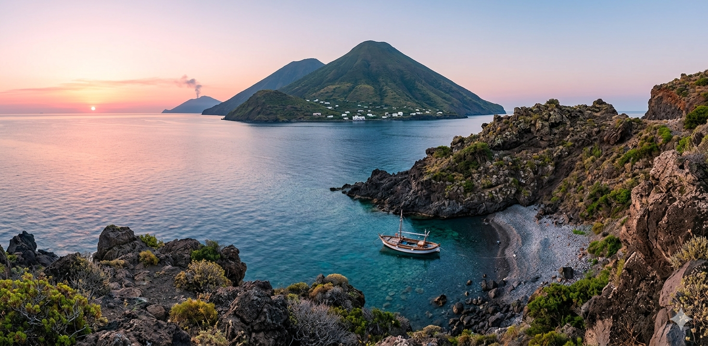
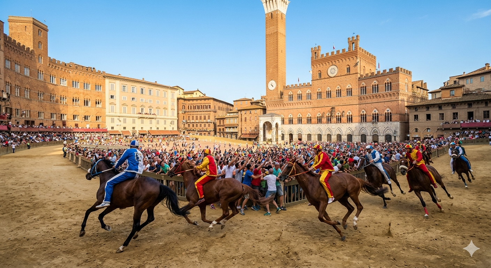
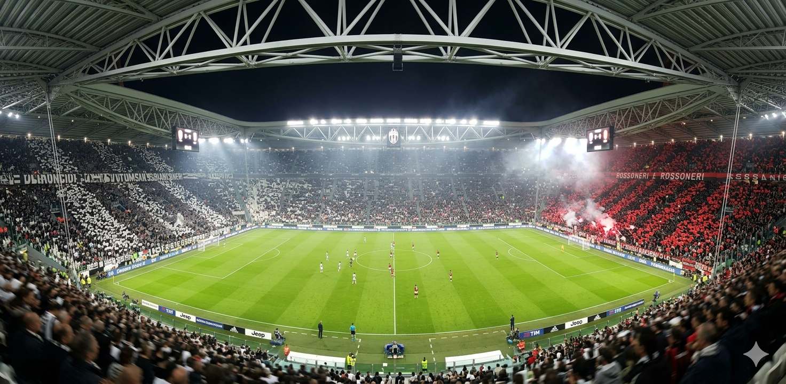
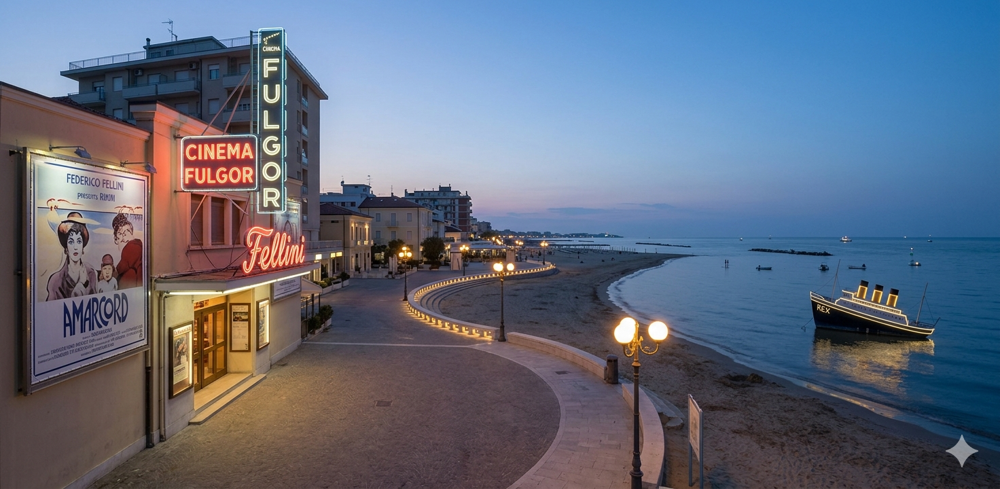
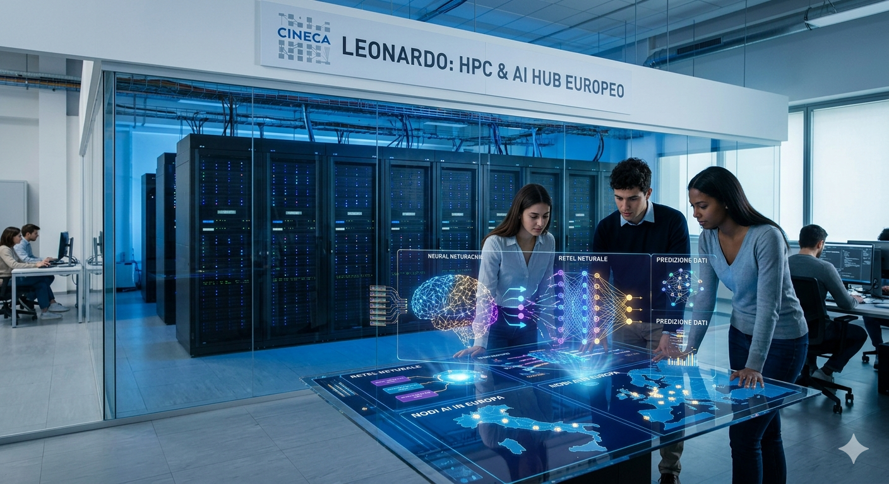
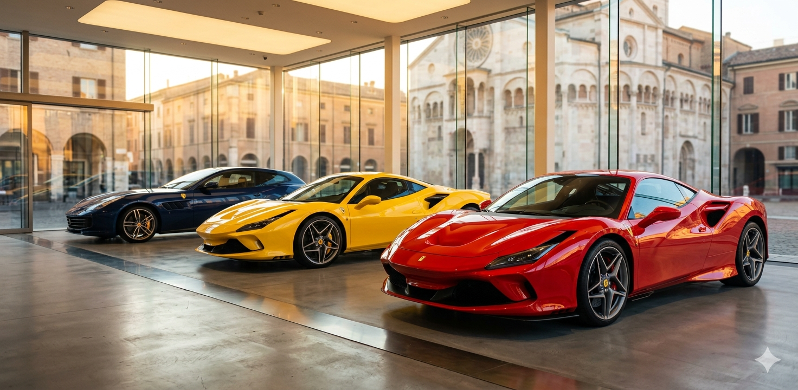
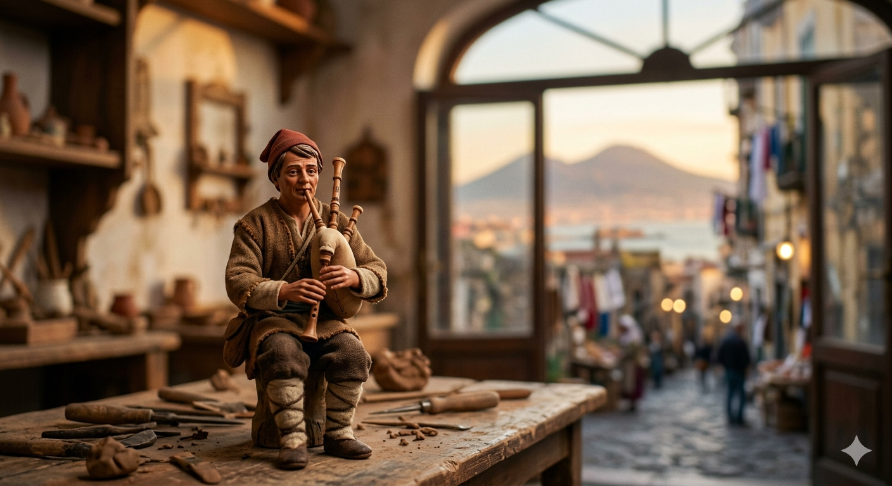
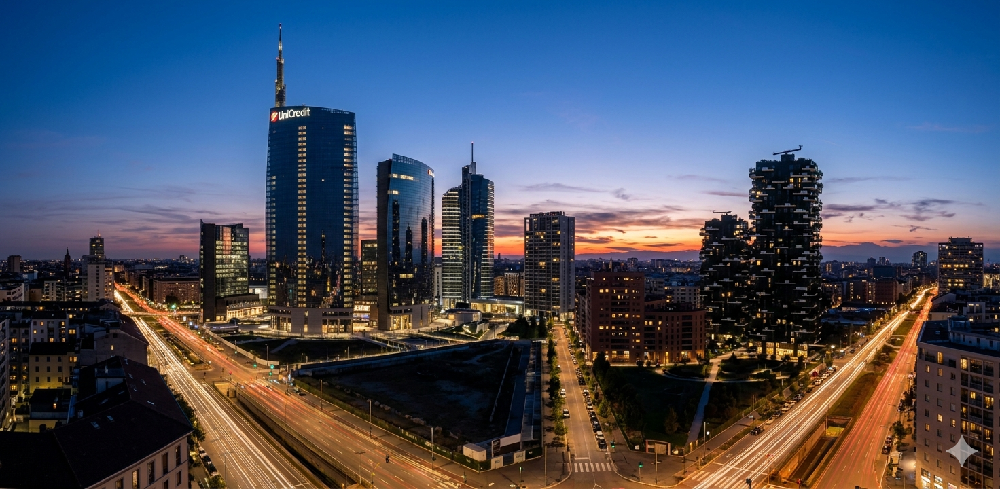
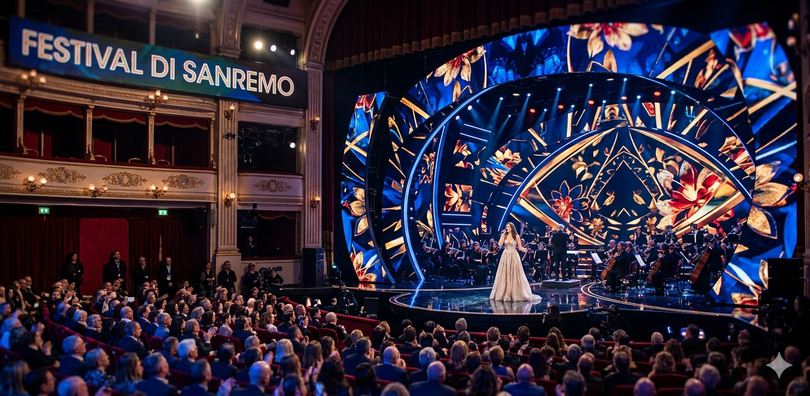
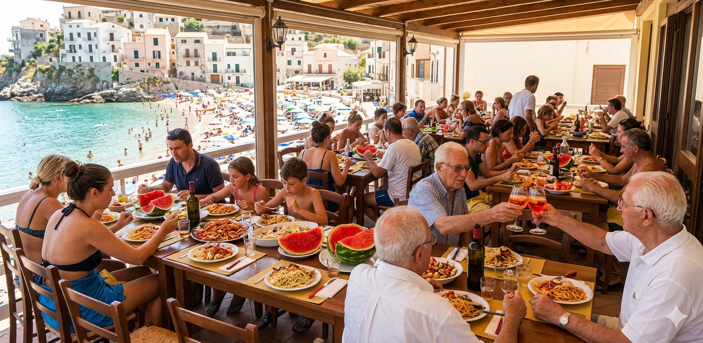

Natureza: As Maravilhas das Ilhas Eólias
Um arquipélago vulcânico único no mundo. Explore Lipari, admire as espetaculares explorações noturnas do vulcão e mergulhe nas lamas sulfúricas do vulcão para uma experiência regeneradora.

Explore a alma autêntica da península através de seus crachás culturais.
Um arquipélago vulcânico único no mundo. Explore Lipari, admire as espetaculares explorações noturnas do vulcão e mergulhe nas lamas sulfúricas do vulcão para uma experiência regeneradora.

Descubra a magia atemporal de Siena. Viva a rivalidade histórica entre os Distritos-Loja, caminhe entre os bairros medievais em festa e testemunhe a lendária corrida dos barbeiros, guiada pela autoridade do movedor no grande vidro.

Viva a atmosfera eletrizante da Série A no San Siro. Siga os vermelhos-e-pretos e os brancos-e-pretos enquanto eles se desafiam no retângulo de jogo em uma partida de tirar o fôlego, decidida no último segundo em plena Zona Cesarini!

Rastreie os lugares do imaginário felliniano em Rimini. Relembre as atmosferas oníricas da obra-prima '8 e meio' e aquele arcord nostálgico da juventude romagnola que marcou a história do cinema mundial.

Descubra o motor tecnológico que está gessando o futuro. Visite o futurista Tecnopolo de Bolonha, sede do supercomputador Leonardo, onde a antiga tradição acadêmica da 'Douta' se une à pesquisa de vanguarda em escala global.

Entre no coração pulsante da engenharia automotiva global. Em Modena você pode ouvir o rugido dos motores dos carros de corrida do Pônei Saltitante e explorar os museums dos supercarros mais rápidos do planeta.

Mergulhe na atmosfera mágica e atemporal da rua São Gregório Armênio. Descubra os segredos das lojas históricas onde os mestres presépios moldam à mão pastores em terra cozida, fundindo admiravelmente a devoção sagrada com a ironia do folclore partenopeu.

Admire a face futurista da capital do design e da moda. Passeie entre as torres futuristas do CityLife, deixe-se encantar pelo premiado Bosque Vertical e desfrute de um aperitivo glamour admirando o horizonte que redefine a cidade à sombra da Pequena Madona.

O templo da canção italiana. Viva a semana mais esperada do ano no Teatro Ariston, onde os bigs da música italiana e novas propostas se desafiam no palco que lançou mitos internacionais.

Junte-se à festa de verão por excelência. 15 de agosto na Itália significa churrascos na montanha, fogueiras na praia, viagens fora da porta para Riccione e relaxamento total sob o sol do Mediterrâneo.
